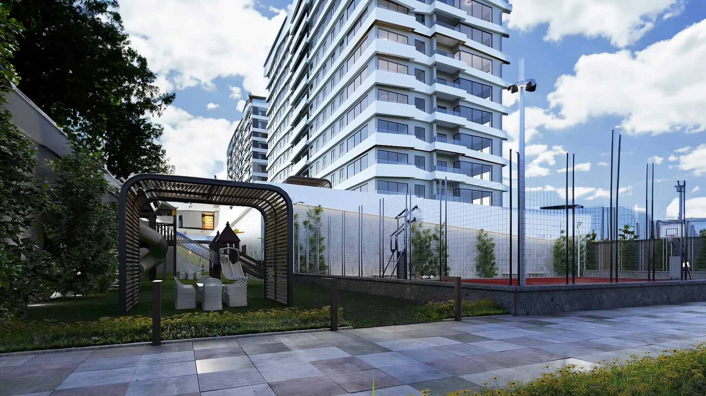

PROJECT OVERVIEW
Venara Güneşli
A two-block residential development in Güneşli with 211 apartments and ground-level commercial spaces. Its published design combines urban homes with shared outdoor and social areas.
Homes211
Blocks2
Commercial units12
Photo gallery

Official architectural illustrations; these images do not show the current construction condition.
EVERYDAY LIVING
Living spaces
The project presentation includes indoor parking, electric vehicle charging and sports and social spaces for residents.
LOCATION AND ACCESS
Bağlar · Bağcılar · Istanbul
Bağlar Mahallesi, Osmanpaşa Caddesi No:56, Bağcılar. The official presentation highlights the Mimar Sinan metro station and the Güneşli business district.
YOUR NEXT STEP
Choose your home
Request the current apartment selection, price and payment options. Compare the exact unit, view and included services before arranging your purchase.